Proctor Character
The player's proctor on its new base, Quaternius Ultimate Modular Men and Women (CC0), chosen in the Proctor Base Comparison (candidate B). A man and a woman on the kit's rig with preset faces, brows, hairstyles and facial hair; skin, hair and eye colours from the classroom's palette; slim, average and heavy builds; the three clips the game plays; and every wardrobe item fitted to both bodies. Students keep today's body. Every image is a render of the exported files in Blender 5.2 (EEVEE, flat colours). The game side, where the player picks the look, is the Proctor Creator; both are merged into main.
The two bases
The man is the kit's Casual 2 body with the Suit head's face; the woman is the Casual body with the Suit head's face. Each wears the issued tee (here in the issued teal), the kit's trousers and shoes, and the default face, brows and hair. Both play the Standing clip.

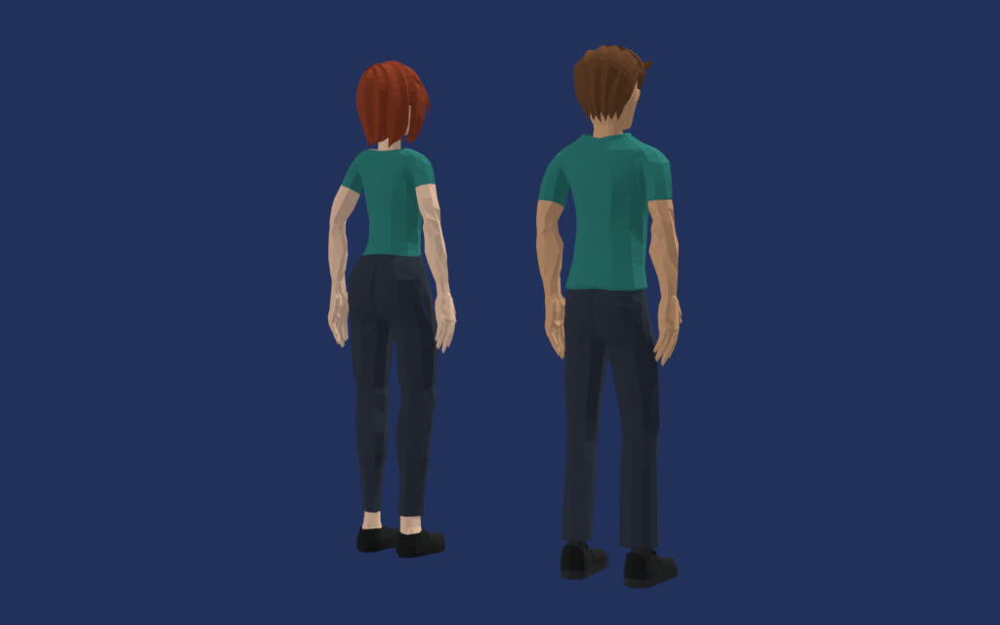
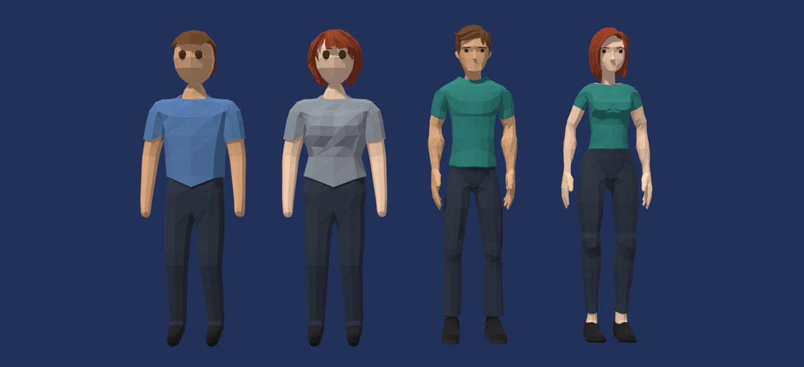
Builds: slim, average, heavy
Two blend shapes, build_slim and build_heavy, on the body, the issued tee, the
legs and every skinned garment; average is both at zero. They come from one deformation field on the skeleton that
reshapes the whole body on both rigs: the torso wider and deeper with a belly, the shoulders, upper and lower arms,
thighs and shins about their bones, and the hips with the top of the thighs about the pelvis, so the hips widen with
the waist. Around the waist every surface takes the same offset, so a top's hem and the waistband under it meet in
every build. The field fades to nothing at the collar, the wrists and just above the trouser hem, so faces, hair,
hats, glasses and shoes need no shapes. Each garment gets the same field through its own skin weights, so every top
and every trouser cut follows the build; the watch copies its shapes from the wrist. The shapes are exported dense,
so Unity reads them on every mesh.


In the room
The game's fixed camera: 58° pitch, 45° field of view. The students are today's body playing the Writing clip; one stands in the aisle.
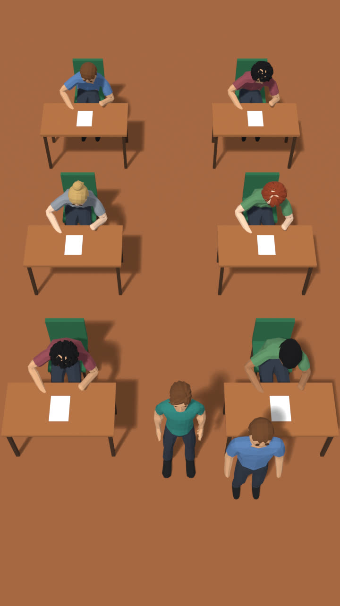


Wardrobe preview framing
512 × 640, the Wardrobe preview's size: full figure and a head-and-shoulders crop, front and three-quarter. The man wears stubble here.


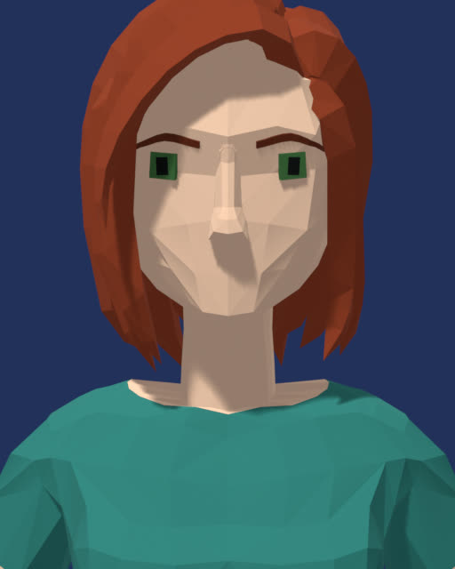
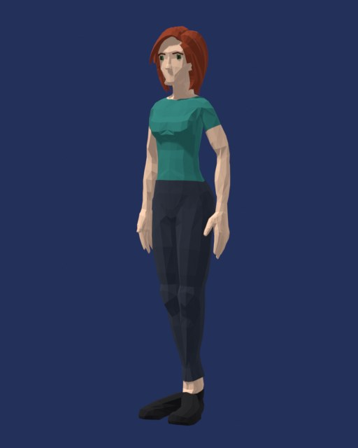
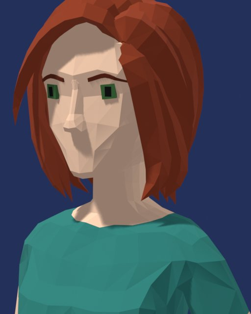
Faces, brows and facial hair
The kit's heads share a single face per body, so the four presets are baked shapes of it: jaw width, chin length, cheeks and nose. Everything from the brows up is left alone, so the eyes, every brow and every hairstyle fit all four faces. Each preset names a default brow, but brows are a choice of their own.
Fixed: the woman's face
The kit's women are a face mask with the hair as the back of the head. The back of her skull is now new geometry welded to the mask's rim and shaped on the man's skull: one surface, one Skin material, no stray pieces along the jaw. Each eye also has one clean pupil now.

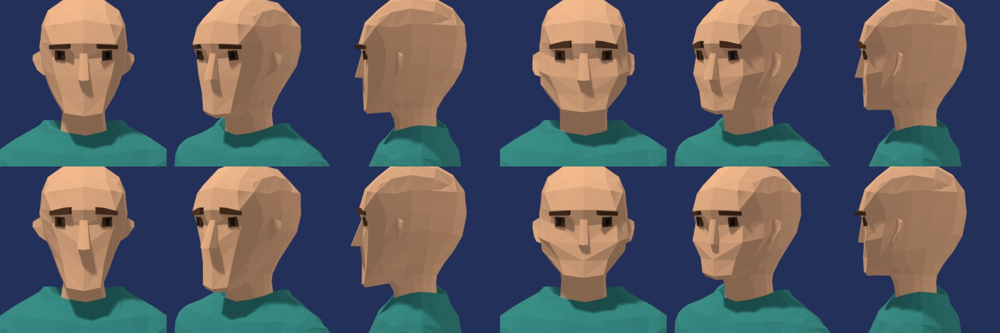


Brows are built, not taken from the kit
The kit's women share one brow shape and the man's slope into a scowl, so each brow is a profile (inner and outer end, lower and upper edge along the brow) laid on the brow ridge 2.2 mm proud of the skin. Every option differs in thickness and line so it reads at game distance. Man: soft medium and gently arched, soft thick thick and arched, straight thin and flat, thick a heavy straight block, heavy the thickest, angled down to the nose. Woman: arched thin with a high arch, soft medium with a low curve, straight thick and flat.
Facial hair: hair only, the face's own mouth
The full beard on black hair read as a mask over the lower face. Facial hair is now hair only: the beard
and stubble are sheets lifted off the jaw with an oval opening round the mouth, and the face's own mouth shows through
it as it does with no facial hair. The stubble and beard cover the upper lip, and their opening sits just under the
moustache's lower edge on every face, so the mouth is where the moustache says it is; a check holds every variant to
within 2 mm of it and to the mouth's size. The beard thins out over the cheeks and fades into a stubble edge, and a
third of its facets take a darker shade so it reads as hair. Stubble is lerp(skin, hair, 0.6), so it
reads on every skin and hair colour.


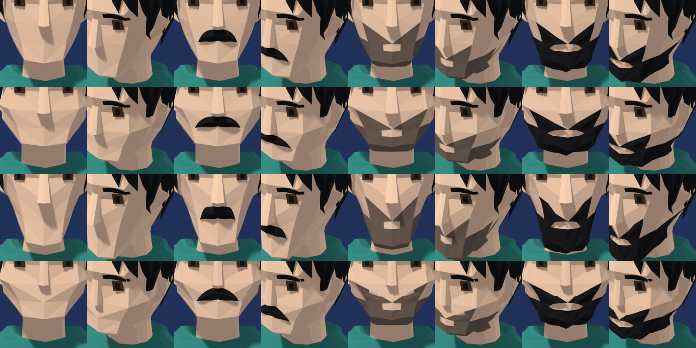
Hair and colours
Every face with every hairstyle; each cell takes the next skin, hair and eye colour. The colours are the classroom's student palette, plus grey hair for the proctor. The heaviest styles are reduced to about 1,500 triangles.


in the game · PR #32 Ash-brown hair. The brown in the palette above is ash brown (#62503F). The proctor's model files carried an older, auburn-looking brown in their hair, brow and stubble materials until PR #32 wrote the ash brown into them; nothing else in the model changed. The grids above were rendered with the older brown.
What is in proctor.glb
One file, two rigs (ProctorRig_M, ProctorRig_F, the kit's skeleton). Every part
is a separate, welded, skinned mesh with a stable id. A manifest next to the file lists every id, its triangles, the
clips, the build shapes, the role materials, the attach bones and the full wardrobe, so the Unity stage can code
against it; changes since the first checkpoint are listed in it too.
| Category | Man | Woman |
|---|---|---|
| Body | body_m (arms, hands) · top_m_issued · legs_m_default · feet_m_default |
body_f · top_f_issued · legs_f_default · feet_f_default |
| Faces | face_m_01–04: Classic, Broad, Long, Round · 448 each |
face_f_01–04: Classic, Heart, Square, Round · 730 each |
| Eyes | eyes_m (iris + pupil) | eyes_f |
| Brows | brows_m_soft (default), _soft_thick, _straight, _thick, _heavy |
brows_f_arched, _soft, _straight |
| Hair | none, hair_m_side 1,500, hair_m_ponytail 1,188, hair_m_spiky 1,400, hair_m_swept 1,404, hair_m_buzz 140, hair_m_mohawk 644 |
hair_f_bob 1,500, hair_f_layered 1,500, hair_f_bun 246, hair_f_mohawk 752, hair_f_pixie 1,399, hair_f_ponytail 1,146 |
| Facial hair | none, fh_m_stubble, fh_m_moustache, fh_m_beard; one mesh per face (fh_m_beard__face_m_02) | none |
| Builds | blend shapes build_slim, build_heavy on body, issued top, legs and every skinned garment | |
| Clips | Standing (41 frames), Walking (33), PresentDocument (73), at 24 fps; one animation drives both rigs | |
The three clips
The names are the ones SupervisorFigure looks up today. Six frames of each, man then woman.
Standing
The kit's Idle_Neutral: relaxed, feet together, slow breathing.
Walking
The kit's Walk, in place. The women's kit clips run 25 % longer than the
men's, so hers are retimed to the man's 41 and 33 frames: one clip, one length for both rigs.
PresentDocument
Retargeted from candidate.glb by bone direction (spine, neck, head,
arms); hips, legs and fingers come from the kit idle so the feet stay planted. Like the original it is a held pose:
right hand out at the waist.
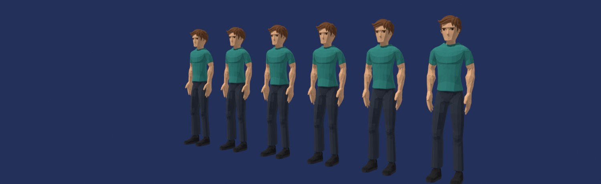

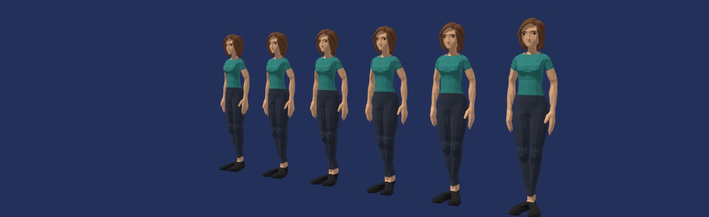

Action gestures in the game · PR #34
When the player acts on a student, the proctor turns to face the student and plays that action's own gesture: observe, talk, warn, inspect, confiscate and remove. Before, every action showed the same frozen reach. The wardrobe is refitted for the gestures so skin does not show through the sleeves.


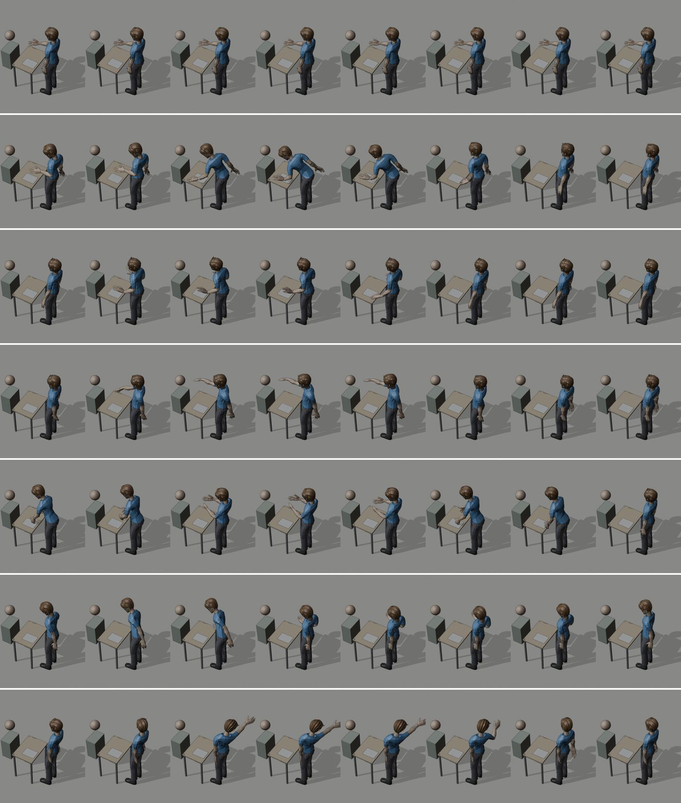
Tinting: a material per role
Every surface is a material named for its role (Proctor_Skin, Proctor_Hair,
Proctor_Hair_Brows, Proctor_Eyes, Proctor_Top, Proctor_Legwear,
Proctor_Shoes …) and every wardrobe surface keeps Ward_Main, Ward_Trim or
Ward_Detail. The game already colours the proctor this way: one white URP Lit material and a
MaterialPropertyBlock per submesh. Two roles have their own rule in the manifest: stubble
(lerp(skin, hair, 0.6)) and the pupil (a fixed near-black). Every top also carries
Proctor_Skin closures in its neckline, sleeves and hem, tinted with the skin like any skin surface.
The wardrobe on both bodies
Every item in the catalogue, fitted to the man and the woman in proctor_wardrobe.glb, worn in
its shop colours, in seven slots: hat, top, trousers, shoes, badge, glasses and wrist. Eight outfits per body cover
every cut, every slot and most colours.


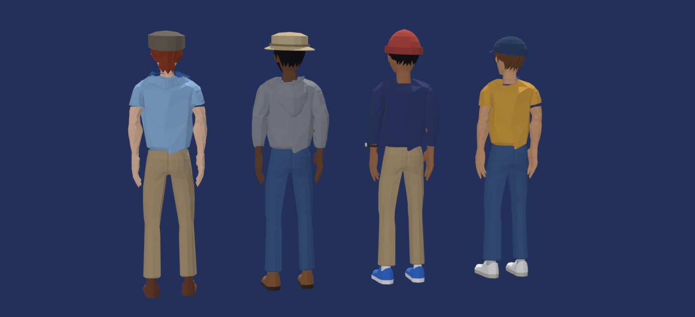
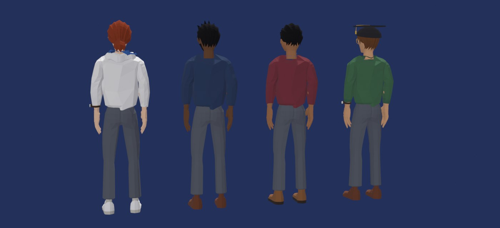


Fixed: Shirt & Tie
The rolled collar is now a folded collar with points, like the polo's, lower at the back, with the knot seated in its V and the tie reaching up to it and lying over the points (close views in Fit details). The tie, knot and buttons are carried over rigidly, so the tie keeps its width. Hems and cuffs are smoothed along their edge, and the sleeves keep more clearance at the elbow.


Every hat over every hairstyle
Rows: cap, beanie, flat cap, bucket hat, graduation cap. Where a hairstyle comes out through a hat it has a
variant pulled 4 mm inside: <hair>__cap for the cap, <hair>__hat for the other four. The
mohawks are combed down flat onto the skull first, so under a hat they read as tucked hair rather than a squashed crest.
Every hat is sealed (the beanie's cuff, the cap's brim and the bucket's band are bridged onto the crown, so no halo or
gap shows) and two-sided, so a brim still shows from below under back-face culling.

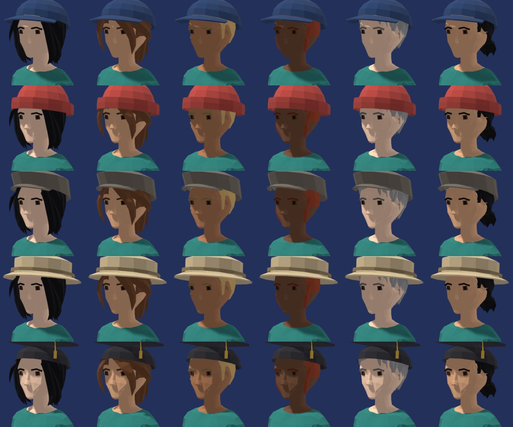


Tops: skinned refit
- Pose the kit rig into the old body's A-pose and warp the garment bone by bone onto it.
- Re-project the shell onto a smoothed copy of the posed kit body at its original distance from the old body.
- Smooth the result, smooth hems and cuffs along their edge and level the hem, push clear of the body (6 mm, 10 mm on the arms, up to 17 mm at the elbows).
- Carry every other piece (tie, buttons, pockets, lapels, bands) rigidly with the shell under it, at least 2.5 mm above it and never below the hem; a collar follows the neckline with a best-fit similarity. These pieces take their build shapes from the shell, so they stay on it in every build.
- Copy skin weights from the kit body, un-pose to the T-pose rest, add the build shapes.
- Seal the pieces onto the shell, make the fabric round each opening two-sided, and close the neckline, sleeves and hem with skin bridged into the neck and arms.
- Settle the sleeves over the arm: push the fabric out wherever skin comes through it in any of the 30 check poses.
A top replaces the issued tee (hides in the manifest).
Hats, glasses, watch
Hats map the old skull onto the new one, 12 mm higher, on Head, sealed and two-sided. Glasses map the
eye centres and sit on the nose 3–4 mm off it, wrapping back where the frame would touch the face; the temple arms
are built to run along the outside of the head from the hinge to the ear; they are sealed and their bridge and arms
two-sided. The
watch is carried along the forearm, centred on the kit wrist with 2.5 mm clearance and skinned like it.
Kit cuts and reused meshes
Formal trousers are the kit's suit legs; jeans and chinos are the default legs tinted. Shoes are the kit's sneakers, formal shoes and work boots; the woman's sneakers and boots are the man's moved onto her skeleton, cut at her trouser hem and tucked inside every trouser cut, so the trousers fall over them in every build. Pins and crests are the existing meshes, clipped on the upper chest (see Fit details).
Fit details
Close views of where a garment meets the body or another garment, rendered from the exported files with back faces culled, as Unity draws them.
Openings: neckline, sleeves and hem closed with skin
The kit has no body under its tee, so an opening used to show the culled inside of the top: the head
seemed to float above a wide neckline and you could see into the sleeves as the arms swung. Every top now carries a
Proctor_Skin closure in each opening: two-sided bridges from the hem's own edge into the neck and the
arms, and a floor inside the waist hem. The fabric round each opening and every detail piece is two-sided, the body's
arm openings are capped, and the woman's neck runs 4 cm further into the tops. A see-through check casts rays from 26
directions over every opening in five poses and builds and finds none on any of the 18 tops. In Unity, a pixel scan
of the sleeves and cuffs finds no see-through pixels.
Sleeves over the arm
The man's issued tee, white tee and polo have short sleeves drawn in to 6 mm off the arm, so the hem hugs it, and his arm skin reaches 6 cm up into the sleeve, tapering, so it stays inside every sleeve. Every wardrobe top's sleeves are then settled over the arm: wherever skin came through the fabric in any of the 30 check poses (three clips, three builds), the sleeve is pushed out there. A poke check casts a ray out from the bone through every arm vertex under a sleeve; the export before the settle failed it on 15 of 18 tops, and this one passes on all 18. The woman's sleeves keep their own cut.
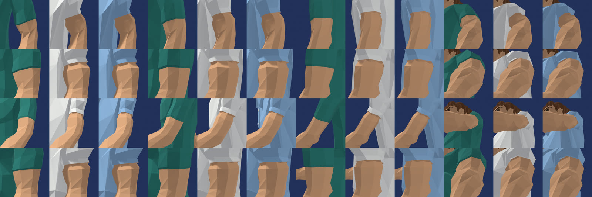
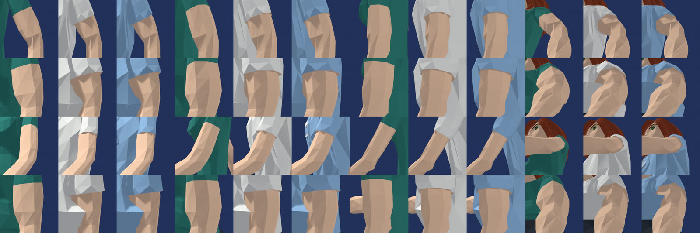
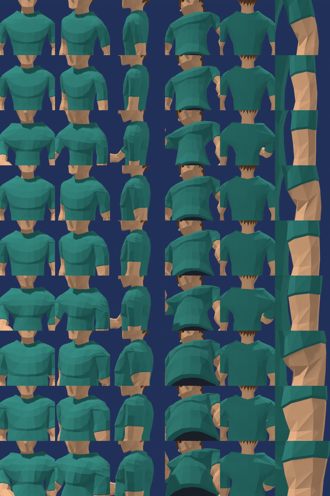
The issued tee
The top every proctor starts in. Its sleeve hems sit 6 mm off the arm with the arm skin 8 mm inside the sleeve, so the closure under the hem is a sliver, and its build shapes carry the sleeve with the arm. From any side, in any clip and build, the arm comes out of the sleeve with nothing to see between them.
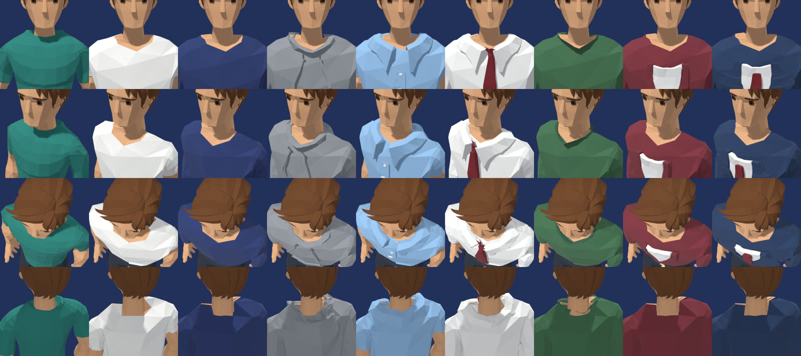
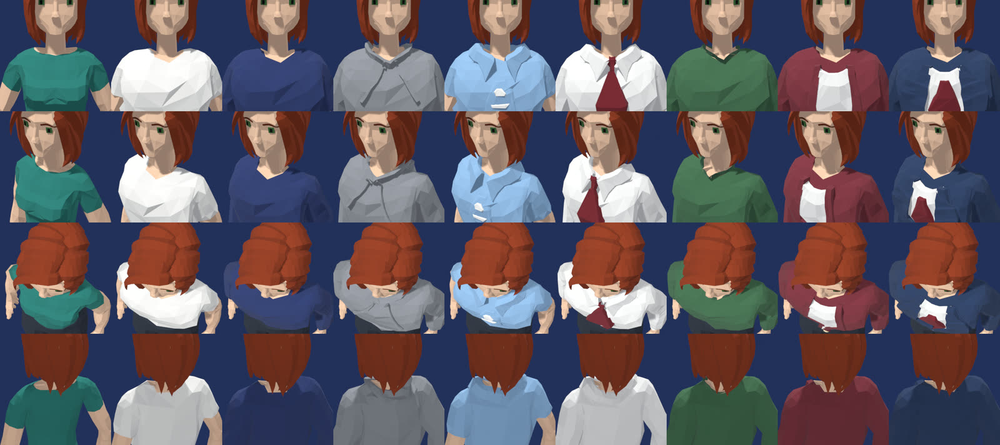
Sweater neck and polo collar
The sweater's neck now closes under the rib band, so no skin ring shows round it. The polo's collar points stay two-sided after sealing, so they show from below.
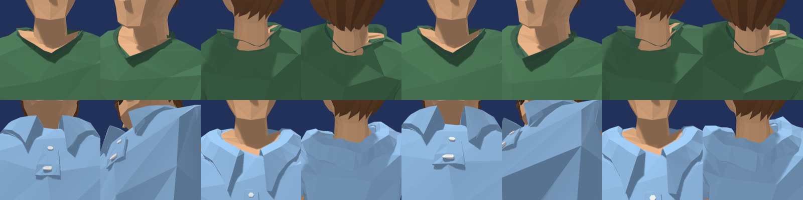
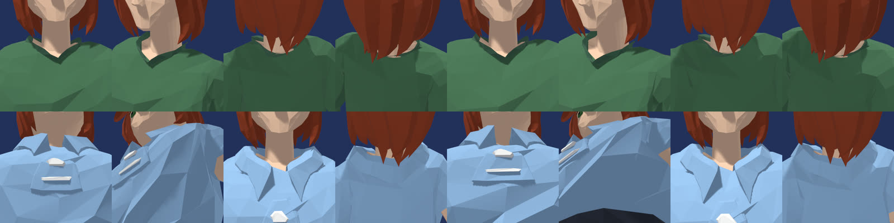
Shirt & tie: a folded collar
The shirt has a folded collar with points, like the polo's, lower at the back. The knot sits in its V, the blade meets the knot and tapers into it, and the tie lies over the collar points.
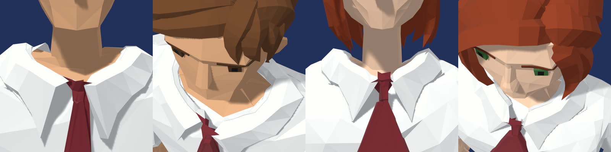
Glasses: on the nose, arms to the ear
Every frame sits on the nose 3–4 mm off it, and where a frame would touch the face it wraps back: the square frame's outer corners turn back about 9 mm. The temple arms are built to run visibly along the outside of the head from the hinge to the top of the ear, at least 1 mm off the skin and resting on it over the ear. A check holds both glasses to this on all four faces and every hairstyle and bald, on both bodies: on bald and short hair the arm shows along the head, under thick hair it may be covered.
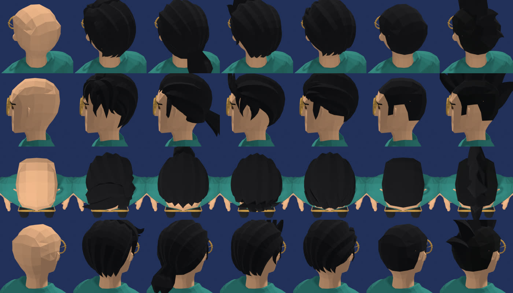
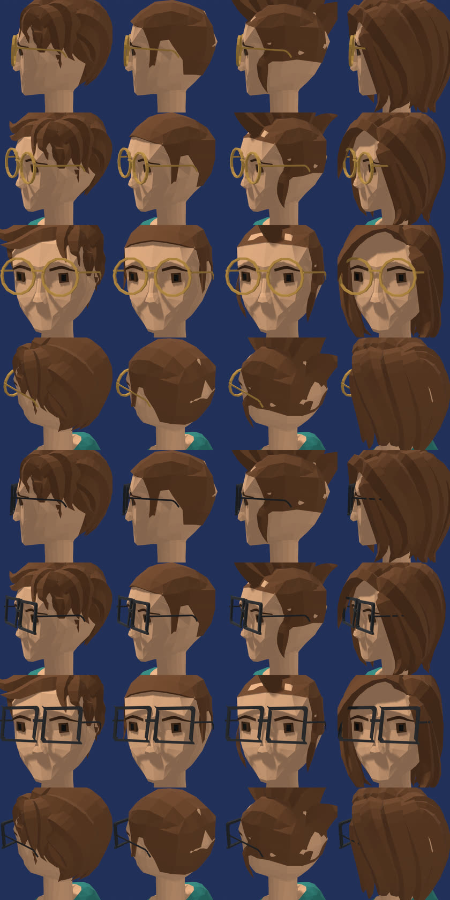
Badges on the upper chest
Pins and crests are clip-ons on the upper chest, placed on Chest by a rule per body: a set
distance below the mid-point of the shoulders and towards the left shoulder, where a ray from the front meets the top,
facing half-way between the cloth and straight ahead. Where that spot would touch an opening, a lapel, a placket or a
drawstring, the badge moves out until it sits on plain fabric, and that top gets its own entry: the man's hoodie,
polo, shirt & tie, cardigan and blazer, the woman's hoodie, sweater, cardigan and blazer. Each entry holds in
all three builds, and the refit is deterministic, so the spots only move when the art does.
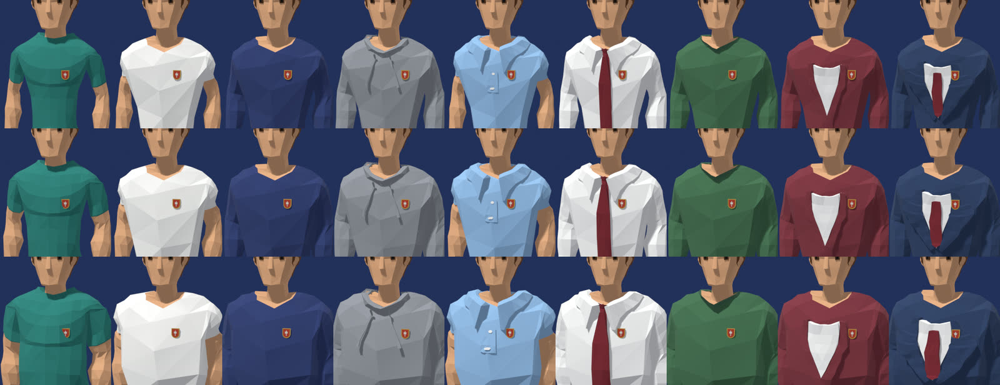
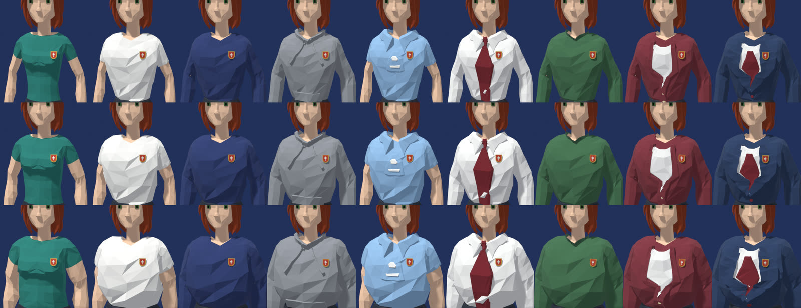
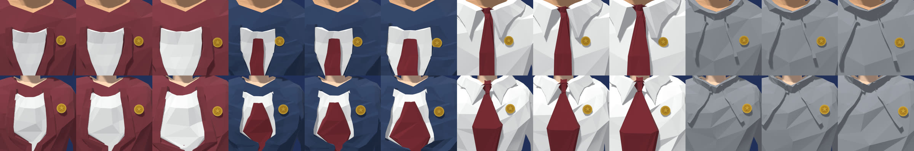
Hems and waistbands at every build
Around the waist the top and the trousers take the same build offset, so the hem stays where it was on the waistband from slim to heavy. A check measures every top's hem against every trouser cut and fails if that distance drifts by 10 mm or more between builds.
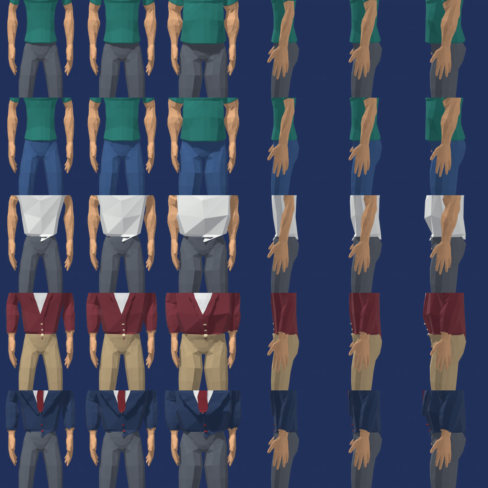
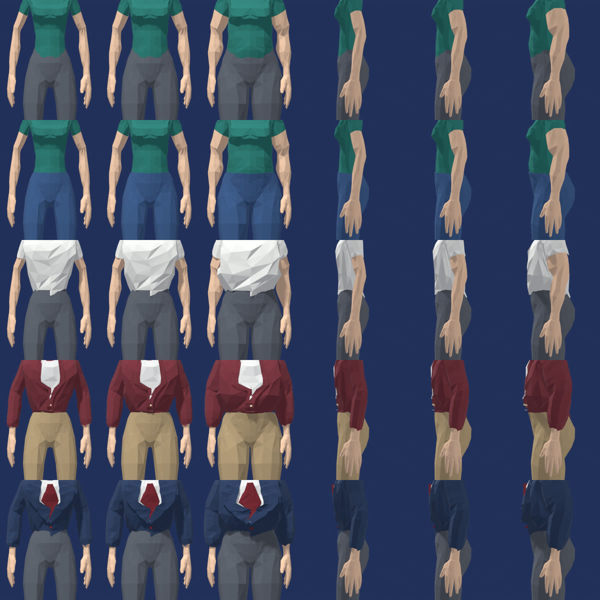
The woman's shoes under the hem
Her sneakers, runners and boots are the man's kit cuts on her skeleton, cut at her trouser hem and tucked inside every trouser cut, so the trousers fall over them in every build. The sneakers keep the kit's tall ankle, which shows as a sock-like band between the shoe and the hem.
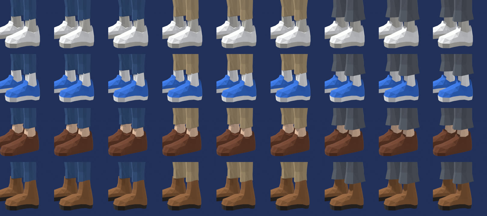
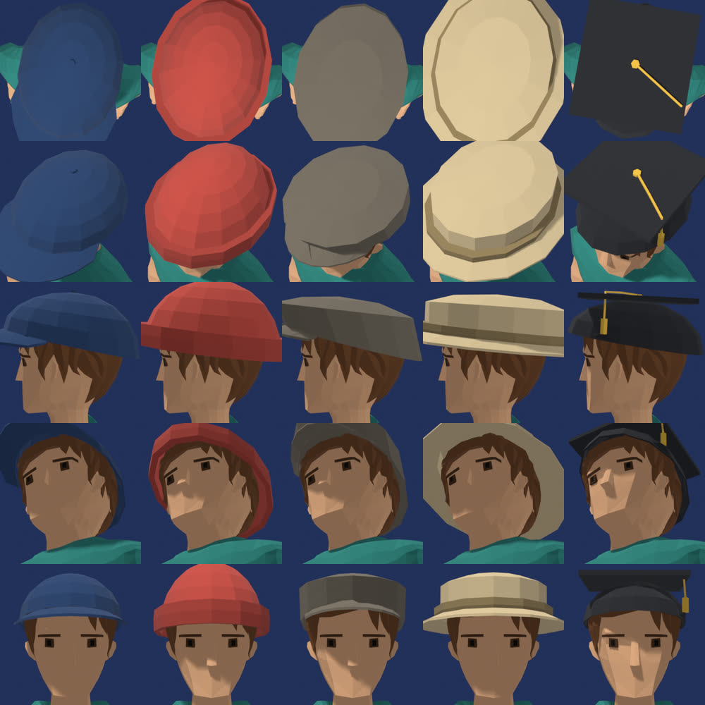
Hats from every side
Sealed: no halo round the beanie's cuff, no gap under the cap's brim, the bucket's band joined to its crown. Two-sided: the brims still show from below. The seam check finds no crack or open gap in any hat, top, pair of glasses or trouser cut, on either body, in any build.
Under the bust in the game · PR #32
The woman's wardrobe tops were fitted as one wall from the collar to the waist, with no curve under the bust. All 17 women's tops now follow it: 5 cm below the apex the front recedes about 2 cm (1.8–2.05 cm), where it receded 0.3 cm at most before (the issued top recedes 4.1 cm). Buttons, plackets, ties, lapels and pockets keep their height above the fabric. Each top gains 144 triangles. On the low-poly tops (tee, long sleeve, sweater, polo and the flag tees) the under-bust reads as a straight crease across the chest, and the US flag print folds along it.

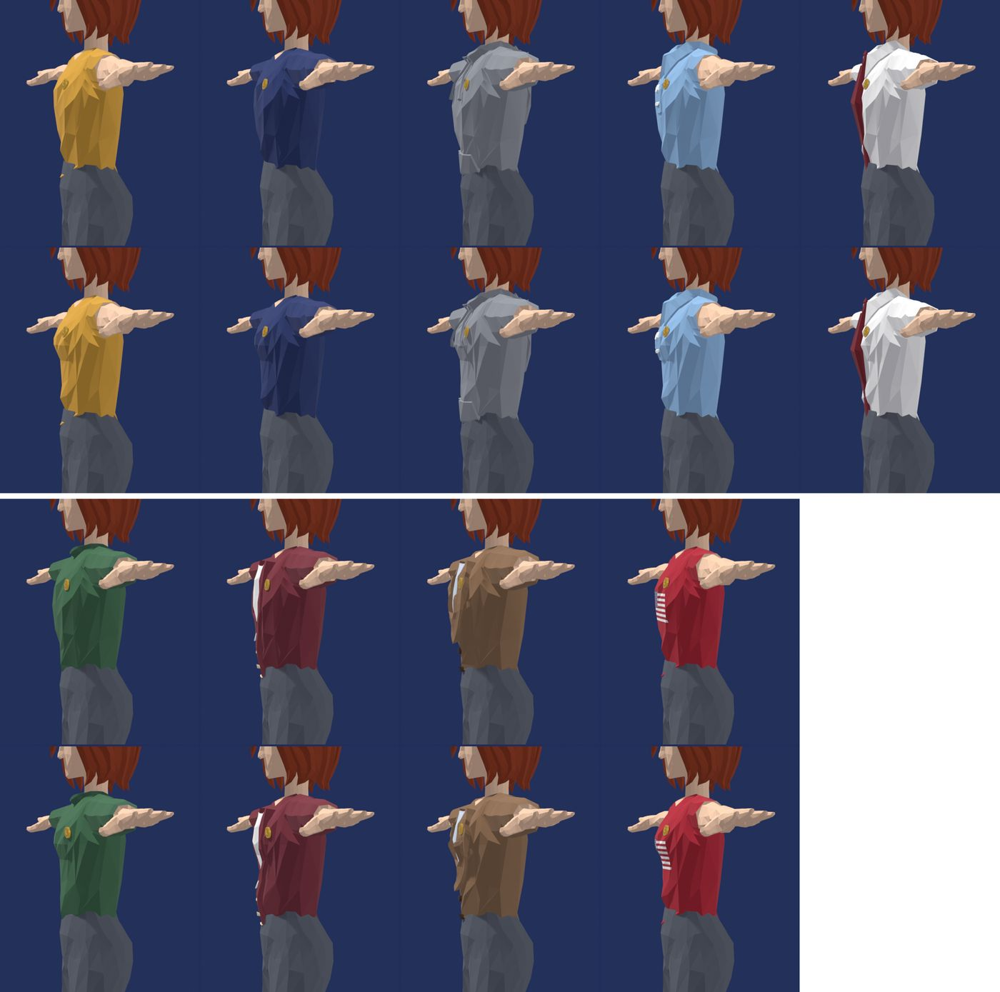
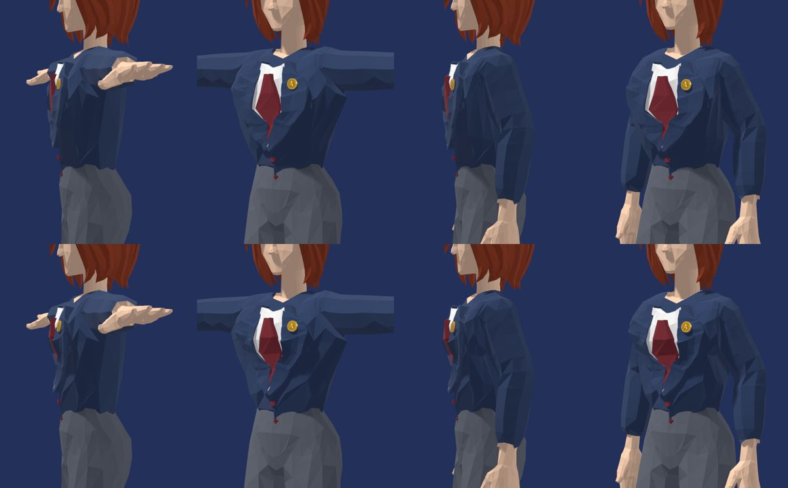
Every wardrobe item
Parts per body (<b> is m or f) and what each item switches off.
| Item | Id | Slot | Man | Woman | Hides | Status | Note |
|---|---|---|---|---|---|---|---|
| Baseball Cap | hat_cap | hat | ward_hat_cap_m | ward_hat_cap_f | – | done | |
| Beanie | hat_beanie | hat | ward_hat_beanie_m | ward_hat_beanie_f | – | done | |
| Flat Cap | hat_flatcap | hat | ward_hat_flatcap_m | ward_hat_flatcap_f | – | done | |
| Bucket Hat | hat_bucket | hat | ward_hat_bucket_m | ward_hat_bucket_f | – | done | |
| Graduation Cap | hat_grad | hat | ward_hat_grad_m | ward_hat_grad_f | – | done | |
| Issued shirt | top_issued | top | top_m_issued | top_f_issued | – | reused | |
| Navy Shirt | shirt_navy | top | ward_top_longsleeve_m | ward_top_longsleeve_f | top_<b>_issued | done | one mesh, coloured by the item (Ward_Main), shared with the other colours of the same cut |
| Charcoal Shirt | shirt_charcoal | top | ward_top_longsleeve_m | ward_top_longsleeve_f | top_<b>_issued | done | one mesh, coloured by the item (Ward_Main), shared with the other colours of the same cut |
| Slate Shirt | shirt_slate | top | ward_top_longsleeve_m | ward_top_longsleeve_f | top_<b>_issued | done | one mesh, coloured by the item (Ward_Main), shared with the other colours of the same cut |
| White T-Shirt | top_tee_white | top | ward_top_tee_m | ward_top_tee_f | top_<b>_issued | done | one mesh, coloured by the item (Ward_Main), shared with the other colours of the same cut |
| Mustard T-Shirt | top_tee_mustard | top | ward_top_tee_m | ward_top_tee_f | top_<b>_issued | done | one mesh, coloured by the item (Ward_Main), shared with the other colours of the same cut |
| Brick T-Shirt | top_tee_brick | top | ward_top_tee_m | ward_top_tee_f | top_<b>_issued | done | one mesh, coloured by the item (Ward_Main), shared with the other colours of the same cut |
| Hoodie | top_hoodie | top | ward_top_hoodie_m | ward_top_hoodie_f | top_<b>_issued | done | one mesh, coloured by the item (Ward_Main), shared with the other colours of the same cut |
| Polo Shirt | top_polo | top | ward_top_polo_m | ward_top_polo_f | top_<b>_issued | done | |
| Shirt & Tie | top_shirt_tie | top | ward_top_shirttie_m | ward_top_shirttie_f | top_<b>_issued | done | |
| Sweater | top_sweater | top | ward_top_sweater_m | ward_top_sweater_f | top_<b>_issued | done | |
| Cardigan | top_cardigan | top | ward_top_cardigan_m | ward_top_cardigan_f | top_<b>_issued | done | |
| Blazer | top_blazer | top | ward_top_blazer_m | ward_top_blazer_f | top_<b>_issued | done | |
| Jeans | trousers_jeans | trousers | legs_m_default | legs_f_default | – | reused | reuses the default legs (the man's kit jeans; the woman's slim trousers), tinted by Legwear |
| Chinos | trousers_chinos | trousers | legs_m_default | legs_f_default | – | reused | reuses the default legs' straight cut, tinted by Legwear |
| Formal Trousers | trousers_formal | trousers | legs_m_formal | legs_f_formal | legs_<b>_default | done | the kit's suit legs, tinted by Legwear |
| White Sneakers | shoes_sneakers | shoes | ward_shoes_sneaker_m | ward_shoes_sneaker_f | feet_<b>_default | done | the woman's is the man's cut on her skeleton, tucked under the hem |
| Running Shoes | shoes_runners | shoes | ward_shoes_sneaker_m | ward_shoes_sneaker_f | feet_<b>_default | reused | reuses the sneaker mesh; the runners' colours tell them apart; the woman's is tucked under the hem |
| Loafers | shoes_loafers | shoes | ward_shoes_loafer_m | ward_shoes_loafer_f | feet_<b>_default | done | |
| Boots | shoes_boots | shoes | ward_shoes_boot_m | ward_shoes_boot_f | feet_<b>_default | done | the woman's is the man's cut on her skeleton, tucked under the hem |
| Bronze Pin | badge_bronze | badge | Badge_Pin | Badge_Pin | – | reused | Unchanged mesh, clipped on the upper chest at the spot for the body and top worn. |
| Silver Pin | badge_silver | badge | Badge_Pin | Badge_Pin | – | reused | Unchanged mesh, clipped on the upper chest at the spot for the body and top worn. |
| Gold Pin | badge_gold | badge | Badge_Pin | Badge_Pin | – | reused | Unchanged mesh, clipped on the upper chest at the spot for the body and top worn. |
| Enamel Badge | badge_enamel | badge | Badge_Pin | Badge_Pin | – | reused | Unchanged mesh, clipped on the upper chest at the spot for the body and top worn. |
| Supporter Badge | badge_supporter | badge | Badge_Pin | Badge_Pin | – | reused | Unchanged mesh, clipped on the upper chest at the spot for the body and top worn. |
| Regional Badge | badge_regional | badge | Badge_Pin | Badge_Pin | – | reused | Unchanged mesh, clipped on the upper chest at the spot for the body and top worn. |
| Maple Crest | crest_maple | badge | Badge_Crest_maple | Badge_Crest_maple | – | reused | Unchanged mesh, clipped on the upper chest at the spot for the body and top worn. |
| Riverside Crest | crest_riverside | badge | Badge_Crest_riverside | Badge_Crest_riverside | – | reused | Unchanged mesh, clipped on the upper chest at the spot for the body and top worn. |
| Eastgate Crest | crest_vocational | badge | Badge_Crest_eastgate | Badge_Crest_eastgate | – | reused | Unchanged mesh, clipped on the upper chest at the spot for the body and top worn. |
| City High Crest | crest_standard | badge | Badge_Crest_cityhigh | Badge_Crest_cityhigh | – | reused | Unchanged mesh, clipped on the upper chest at the spot for the body and top worn. |
| Brightpath Crest | crest_brightpath | badge | Badge_Crest_brightpath | Badge_Crest_brightpath | – | reused | Unchanged mesh, clipped on the upper chest at the spot for the body and top worn. |
| Kingsley Crest | crest_elite | badge | Badge_Crest_kingsley | Badge_Crest_kingsley | – | reused | Unchanged mesh, clipped on the upper chest at the spot for the body and top worn. |
| State University Crest | crest_state-university | badge | Badge_Crest_university | Badge_Crest_university | – | reused | Unchanged mesh, clipped on the upper chest at the spot for the body and top worn. |
| National Centre Crest | crest_national | badge | Badge_Crest_national | Badge_Crest_national | – | reused | Unchanged mesh, clipped on the upper chest at the spot for the body and top worn. |
| Round Glasses | glasses_round | glasses | ward_glasses_round_m | ward_glasses_round_f | – | done | |
| Square Glasses | glasses_square | glasses | ward_glasses_square_m | ward_glasses_square_f | – | done | |
| Wristwatch | wrist_watch | wrist | ward_watch_m | ward_watch_f | – | done | skinned with the wrist's weights |
Checks
check_wardrobe.py runs every check on the exported files and writes the results into the
manifest's checks; every check below except the watch fails the run if anything is off.
| Check | What it measures | Result | Read |
|---|---|---|---|
| Seams | every wardrobe part and trouser cut, both bodies, all three builds: open edges closer than 1.5 mm that are not joined (a crack), or an open edge hovering more than 0.6 mm off another piece of the same part within reach (a gap) | 42 parts, 0 cracks, 0 gaps | pass |
| Build shapes | every body, top and legwear mesh read as glTF the way Unity reads it: both shapes on every primitive, dense, and the heavy one moving the mesh at least 1 cm | 24 meshes, heavy reach 1.9–6.5 cm | pass |
| Waistbands | every top's hem against every trouser cut: how far that distance drifts from average to slim or heavy; must stay under 10 mm | 36 pairs, worst 10.2 mm | pass |
| Feet | every foot and shoe, both bodies: no vertex weighted to both legs, no edge joining the two feet, no foot edge stretched past twice its length in any of the 30 poses | 8 parts, worst stretch 1.31× | pass |
| See-through | every top, issued and wardrobe, both bodies, in five poses and builds: rays from 26 directions over each opening (neckline, sleeves, hem) with back faces culled as in Unity; a ray that would show the background through the figure counts | 18 tops, 0 rays | pass |
| Openings | every top's neckline and sleeve edges either hug the skin (within 8 mm) or have the skin closure within 9 mm, and the closure's edge stays on the skin in all 30 poses | 18 tops | pass |
| Mouths | every stubble and beard variant: the mouth opening centred within 2 mm of the face's mouth, just under the moustache's lower edge, and the mouth's size | 8 variants, worst 0.8 mm off | pass |
| Glasses | both glasses on all four faces and every hairstyle (and bald), both bodies: the bridge within 4 mm of the nose and not in it, no frame vertex inside a face, every arm vertex from hinge to ear at least 1 mm outside the skin and resting within 7 mm of it over the ear, and none under a thin layer of hair, so the arm shows along the head | 28 glasses and hair pairs | pass |
| Poke | every top, both bodies, in the 30 poses: every arm skin vertex under a sleeve casts a ray out from its bone and must meet the sleeve; skin showing through fails (the export before the sleeve settle failed it on 15 of 18 tops) | 18 tops, 0 vertices | pass |
| Watch | vertices sinking more than 4 mm into the wrist in any pose | man 0, woman 0 | pass |
Poke-through, per top
Each top is replayed in Standing, Walking and PresentDocument at ten frames in all three builds (30 poses). Skin under the top counts the body vertices that have the top within 3 cm in Standing; the worst pose is how many of them lose it. For short sleeves that is mostly the arm showing under the sleeve opening as it swings, not skin through cloth.
| Top | Skin under it | Worst pose | Where | Read |
|---|---|---|---|---|
| blazer (man) | 937 | 15 (1.6 %) | build_heavy PresentDocument 36 | ok |
| cardigan (man) | 949 | 11 (1.2 %) | build_heavy PresentDocument 0 | ok |
| hoodie (man) | 940 | 13 (1.4 %) | build_heavy PresentDocument 0 | ok |
| long sleeve (man) | 967 | 12 (1.2 %) | build_heavy PresentDocument 0 | ok |
| polo (man) | 236 | 95 (40.2 %) | build_heavy Standing 0 | sleeve opening |
| shirt & tie (man) | 966 | 11 (1.1 %) | build_slim Walking 16 | ok |
| sweater (man) | 949 | 11 (1.2 %) | build_heavy PresentDocument 0 | ok |
| tee (man) | 235 | 94 (40.0 %) | build_heavy Standing 0 | sleeve opening |
| blazer (woman) | 785 | 5 (0.6 %) | build_heavy PresentDocument 0 | ok |
| cardigan (woman) | 786 | 4 (0.5 %) | average Walking 0 | ok |
| hoodie (woman) | 787 | 3 (0.4 %) | build_heavy PresentDocument 0 | ok |
| long sleeve (woman) | 775 | 5 (0.7 %) | average Walking 0 | ok |
| polo (woman) | 70 | 15 (21.4 %) | build_heavy PresentDocument 0 | sleeve opening |
| shirt & tie (woman) | 774 | 7 (0.9 %) | build_slim PresentDocument 0 | ok |
| sweater (woman) | 786 | 4 (0.5 %) | average Walking 0 | ok |
| tee (woman) | 68 | 13 (19.1 %) | build_heavy PresentDocument 0 | sleeve opening |
Triangles
Target: at most 8k per dressed proctor on mobile. Sealing, the skin closures in every opening and the
two-sided details and hats put the heaviest combination over it. proctor_wardrobe.glb is
12.4 MB, proctor.glb 6.3 MB.
| Figure | Parts | Triangles | vs 8k |
|---|---|---|---|
| Man, every slot at its heaviest | body_m, legs_m_formal, ward_shoes_sneaker_m, face_m_04, eyes_m, brows_m_thick, hair_m_side__hat, fh_m_beard__face_m_04, ward_top_cardigan_m, ward_hat_bucket_m, ward_glasses_round_m, ward_watch_m | 10,113 | over |
| Woman, every slot at its heaviest | body_f, legs_f_default, ward_shoes_sneaker_f, face_f_04, eyes_f, brows_f_straight, hair_f_layered__hat, ward_top_blazer_f, ward_hat_bucket_f, ward_glasses_round_f, ward_watch_f | 9,852 | over |
| Tops | tee 464, longsleeve 695, hoodie 1,875, polo 1,461, shirttie 1,724, sweater 1,453, cardigan 2,427, blazer 2,412 (man) | 464–2,540 | – |
| Hats, glasses, watch, shoes | hats 428–644, glasses 632–680, watch 208, shoes 464–552 | – | – |
Open problems
- A straight crease under the bust on the woman's low-poly tops with the PR #32 fit (see Under the bust).
- Warn has no pointing finger yet (PR #34).
- Remove's gesture leaves the frame at the game's zoomed camera (see Action gestures).
- The sweater's rib band shows a thin dark line along it at the back.
- The polo's collar edge lets a few pixels show through when seen from below.
- From directly above, the glasses' arms show along the sides of the hair; the geometry is correct.
- A thin dark line under the woman's short-sleeve hems in Unity is ambient occlusion (SSAO), not a hole.
- About 10.1k triangles for the heaviest dressed figure (man: cardigan, bucket hat, beard; the woman 9,852), over the 8k target (the woman 9,996 with the PR #32 bust fit) and not yet measured on the Galaxy A15.
- Slim and average are close. Heavy reads at a glance; slim is a subtle step down from average.
- The woman's sneakers keep the kit's tall ankle, which shows as a sock-like band between the shoe and the hem; it stops inside the trousers.
- The Tweed Jacket (
top_tweed, the Supporter Pack look) still needs proctor art for both bodies and a shop tile before its catalogue entry lands. - The cardigan's front bands meet a little above the point of the shirt V in the heavy build.
- The woman's short boots are the man's kit work boots moved onto her skeleton, so they read a little large.
- Face variety is shape only. The kit has one face per body, so the four presets differ by jaw, chin, cheeks and nose, plus brows and facial hair.
- The mohawks are kept as presets. Under a hat the crest is combed down flat onto the skull first, so it reads as tucked hair.
Method and licence
- All parts, clips, builds and refits are built by scripts in the game repo (
ArtSource/Characters/Proctor/), run headless in Blender 5.2 and exported as glTF for glTFast. The renders read the exported files back and dress each figure from the manifest, so they show what Unity will import. - Lighting and cameras follow the base comparison: one sun, a soft fill, a dark blue backdrop like the Wardrobe preview, and the game's room camera.
- Ultimate Modular Men and Ultimate Modular Women by Quaternius: CC0 1.0 Universal. Credit is not required but is given here. Modular Men · Modular Women
- The wardrobe items, today's student body and the classroom are this project's own. No paid or generative tool was used.